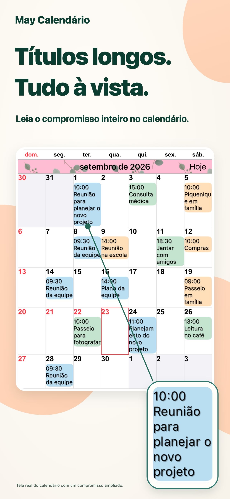
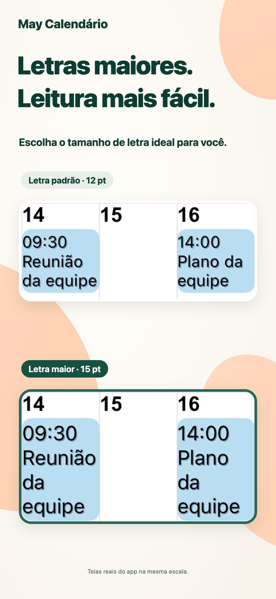
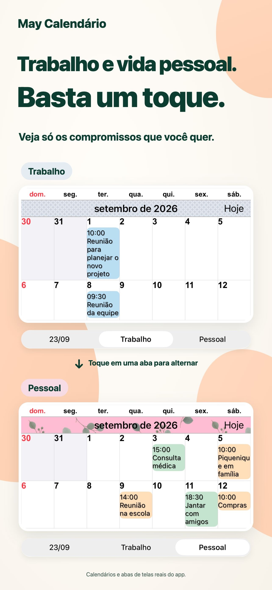
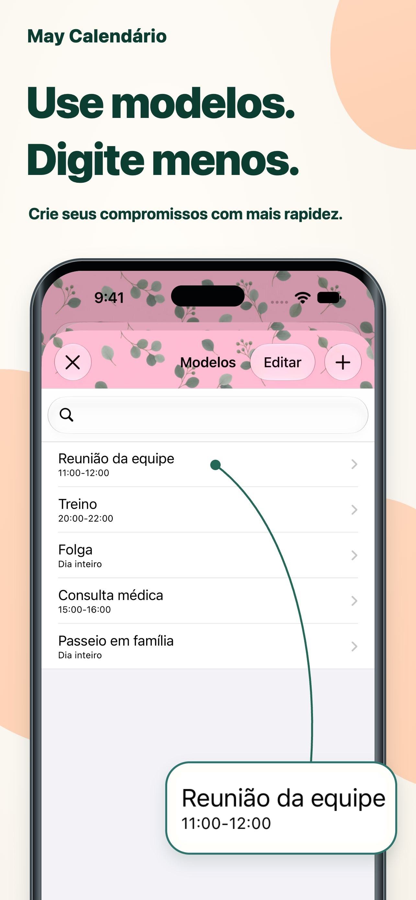

Um visual que é seu.
Combine cores do tema, fundos de eventos e padrões para criar seu calendário.
Mais clareza no seu dia.
Títulos longos direto na visualização mensal. Texto e cores do seu jeito, para ver os compromissos num relance.
Para iPhone e iPadVer na App StoreDownload gratuito · Compras no app

Um pouco mais de facilidade ao planejar.
Trabalho e vida pessoal em um só lugar.PARA O SEU DIA A DIA
Adapte o calendário ao seu jeito de se organizar.
Títulos longos aparecem em várias linhas. Ajuste a fonte e o tamanho para ler os detalhes sem perder a visão do mês.

Salve combinações de calendários e alterne entre compromissos profissionais e pessoais com um toque.

Salve reuniões, exercícios e consultas como modelos. Toque duas vezes em uma data e escolha um modelo para adicionar um evento.

PEQUENOS DETALHES FAZEM DIFERENÇA.
Combine cores do tema, fundos de eventos e padrões para criar seu calendário.
Escolha entre 20 tipos de widgets, incluindo opções exclusivas para iPad.
Exiba apenas os eventos que correspondem ao texto digitado.
PERGUNTAS E RESPOSTAS
O download é gratuito e há compras no app. Consulte a App Store para conferir preços e opções atuais. Ver na App Store
Sim, no iPhone e no iPad. Alguns widgets são exclusivos para iPad. Confira os requisitos atuais de sistema na App Store.
Oferece lembretes, feriados, números de semana e informações do calendário lunar. Também permite ajustar o início da semana e o fuso horário.
As notificações são enviadas pelo app Calendário da Apple. Você pode configurar alertas antes do início ou do fim de um evento.
DIAS MAIS CLAROS.
Comece com um calendário que combina com você.